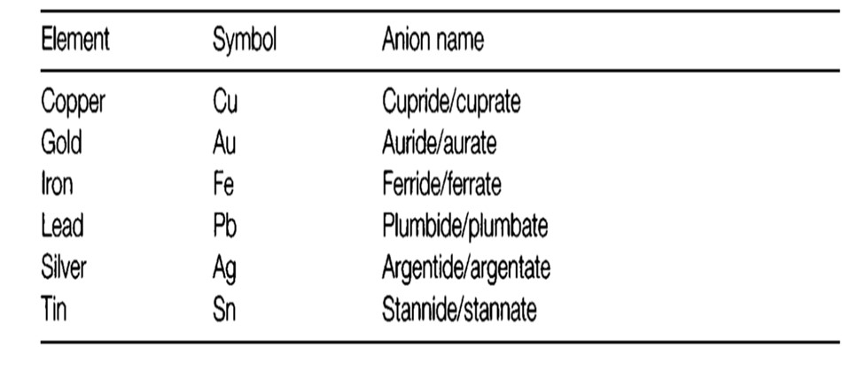

Lesson 3
DESCRIBING INORGANIC COMPOUNDS
It is important to distinguish the stoichiometric or empirical formula of a molecular substance from its molecular formula. The former expresses only the relative numbers of atoms present, in the simplest possible ratio. For example, the compound of stoichiometry P2O5 contains P4O10 molecules. Molecular formulae should be used when they are known.
Simple examples are sodium chloride (NaCl), phosphorus dichloride (PCl3) and tetroxide (N2O4). The oxidation state may be given as an alternative to the stoichiometry, as in manganese (IV) oxide, and manganese dioxide, MnO2 (see Topic B4). This is unnecessary when only one possibility is known, as in magnesium bromide (MgBr2).
Elements are named in the same order as they appear in the formula (see above). Although there is no implication that the compound is ionic, the names ending inide are the same as those used for anions. Anion names are derived not from English but from the Latin name which gives the chemical symbol. For example, CsAu is cesium au ride.